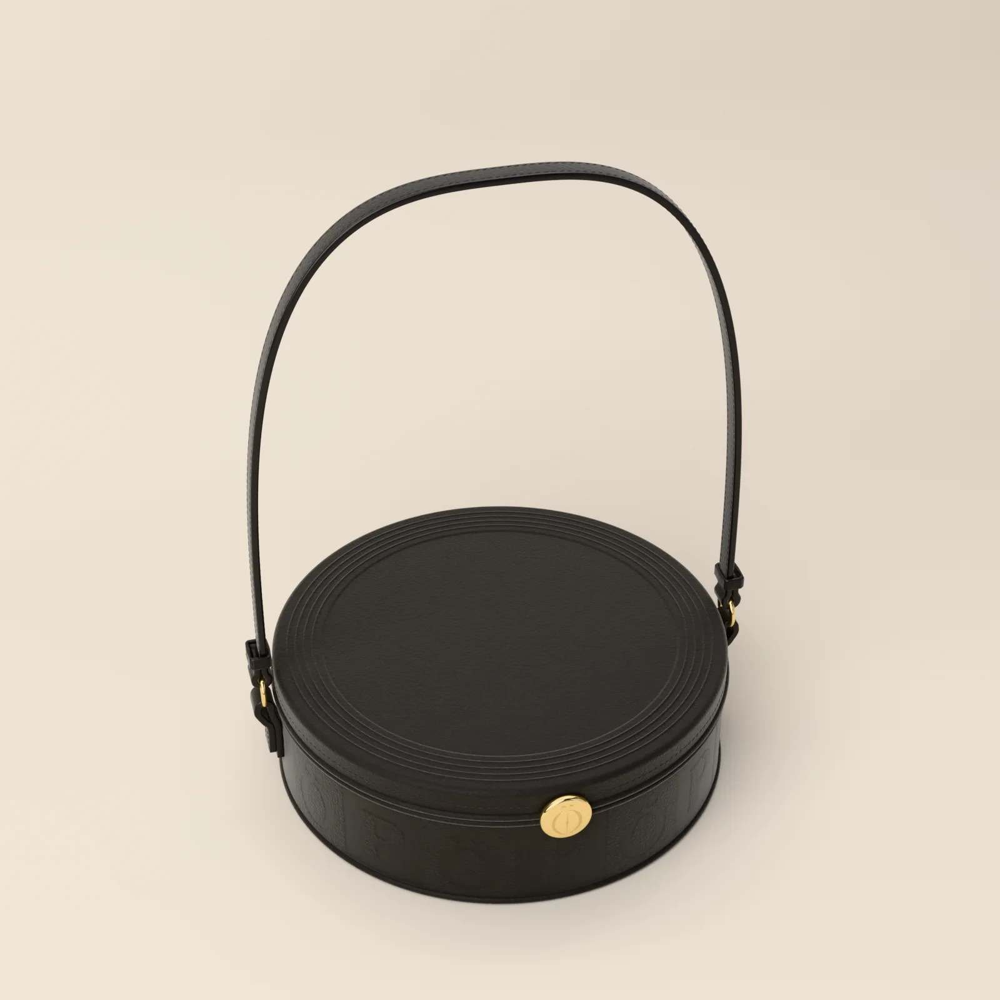
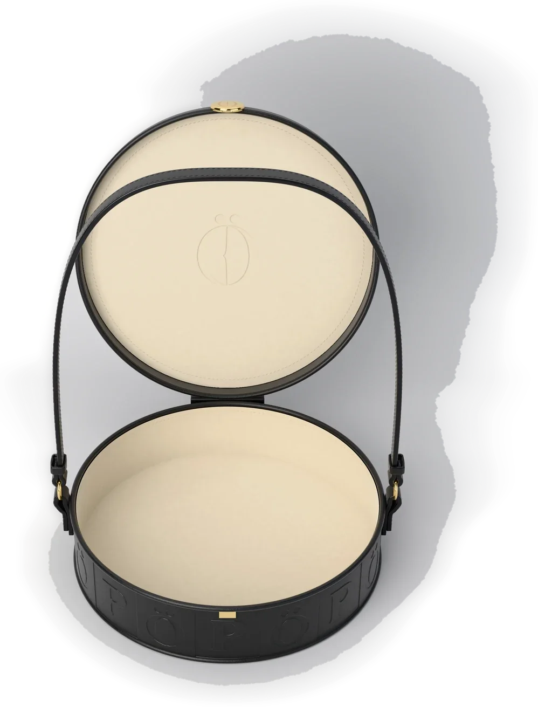
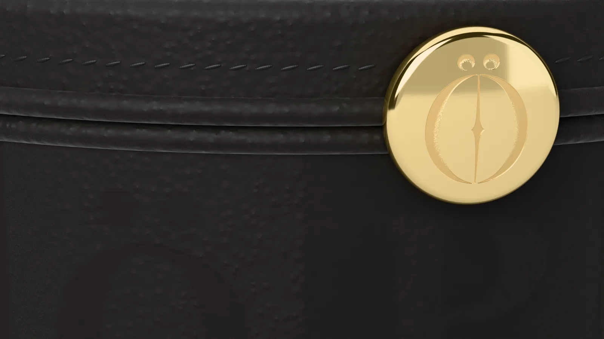
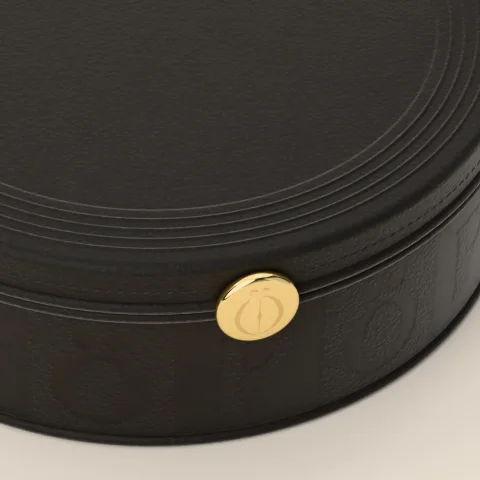
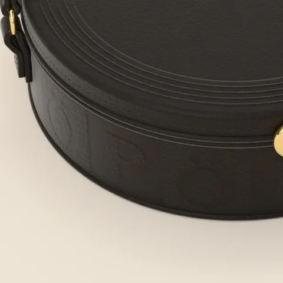

STAND-IN · img/voluta/three-quarter/master.* (three-quarter view, 8K; 8K, 7680 × 4320)
STAND-IN · img/voluta/open/master.* (open view, 8K; 8K, 7680 × 4320)Where it is going
The suite’s vanity, morning
Two glasses, one poured.
Chapter I · Bags
Voluta
Round bag
Scroll to walk around it
Chapter I
Voluta
Round bag
A film can, kept in black calfskin. Round, closed by a gold clasp, the PÖ pressed into its band, and inside, cream suede where the reel would be.
- LEATHER
- BLACK CALFSKIN
- DIMENSIONS
- 22 × 7 CM
- LINING
- CREAM SUEDE
- CLASP
- GOLD
PRICE ON REQUEST
Keep a seatThe register sees the pre-sale first.
Details
- Pre-sale
- Made to order. We email your delivery date once production is confirmed. Cancel for a full refund any time before production starts.
- Returns
- Exchanges within 14 days of delivery, unused and with tags.
- Care
- Wipe with a soft dry cloth. Keep from rain and heat; if it gets wet, let it dry slowly away from a radiator. Store in its dust bag, stuffed with tissue, out of the light. Leather cleaning by a specialist only. Care
- Size
- The measurements
 STAND-IN · img/voluta/world/master.* (C13: the last frame, the world plate (the suite’s vanity, morning); 8K, 5760 × 7680)
STAND-IN · img/voluta/world/master.* (C13: the last frame, the world plate (the suite’s vanity, morning); 8K, 5760 × 7680)Where it is going · C13
The suite’s vanity, morning
Two glasses, one poured.
On the screen in the film, the picture is tomorrow: each piece in the place it is going, with one place kept for someone.
The filmClose

STAND-IN · img/voluta/detail-material/master.* (the calfskin, 8K close-up; 8K, 7680 × 4320)The calfskin

STAND-IN · img/voluta/detail-clasp/master.* (the clasp, 8K close-up; 8K, 7680 × 4320)The clasp

STAND-IN · img/voluta/detail-band/master.* (the pressed band, 8K close-up; 8K, 7680 × 4320)The pressed band
The maker’s notes
Voluta, the Reel
- It begins as a circle of black calfskin: 22 cm across, 7 cm deep.
- Sixteen squares are pressed round the side band, 0.4 mm deep, each 43.2 by 44.9 mm.
- The lid is pressed with four fine rings and hinged at the back on a leather strip.
- It closes at the front on a round gold disc, 24 mm.
- The strap is 12 mm wide and folds through a gold ring on each side.
Inside it: cream suede, and the mark pressed 0.8 mm into the suede of the lid.
Read the bookThe packaging
The house lights go down. Black board, cream tissue the colour of the screen, and one gold disc between you and the first scene.
 STAND-IN · img/shared/pack-closed/master.* (packaging/chapter1/renders: closed (the approved final, 3840 px); 8K, 7680 × 4320)
STAND-IN · img/shared/pack-closed/master.* (packaging/chapter1/renders: closed (the approved final, 3840 px); 8K, 7680 × 4320)The closed box, its band and the gold disc
 STAND-IN · img/shared/pack-open/master.* (packaging/chapter1/renders: open (the approved final, 3840 px); 8K, 7680 × 4320)
STAND-IN · img/shared/pack-open/master.* (packaging/chapter1/renders: open (the approved final, 3840 px); 8K, 7680 × 4320)The open box, the piece folded in cream tissue
 STAND-IN · img/shared/pack-disc/master.* (packaging/chapter1/renders: disc (the approved final, 3840 px); 8K, 7680 × 4320)
STAND-IN · img/shared/pack-disc/master.* (packaging/chapter1/renders: disc (the approved final, 3840 px); 8K, 7680 × 4320)The gold disc on the band
 STAND-IN · img/shared/pack-shopping/master.* (packaging/chapter1/renders: shopping (the approved final, 3840 px); 8K, 7680 × 4320)
STAND-IN · img/shared/pack-shopping/master.* (packaging/chapter1/renders: shopping (the approved final, 3840 px); 8K, 7680 × 4320)The shopping bag with cream tissue
 STAND-IN · img/shared/pack-trims/master.* (packaging/chapter1/renders: trims (the approved final, 3840 px); 8K, 7680 × 4320)
STAND-IN · img/shared/pack-trims/master.* (packaging/chapter1/renders: trims (the approved final, 3840 px); 8K, 7680 × 4320)The hang tag, the card and the sealed envelope